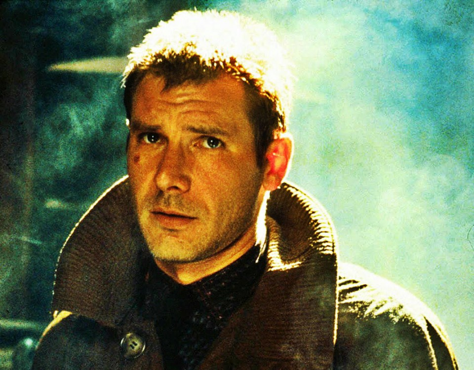

Actores y Personajes
-
Harrison Ford
-

Harrison Ford (Chicago, Illinois, 13 de julio de 1942) es un actor estadounidense de cine y televisión. Debe su notoriedad a su colaboración con el guionista, productor y director George Lucas,que fue el primero en darle la posibilidad de ser actor. Sus papeles de Han Solo en la saga de Star Wars y de Indiana Jones lo elevaron al nivel de estrella internacional.
Aunque un fracaso inicial en taquilla, la película de Ridley Scott Blade Runner, donde desempeña el papel del cazador de replicantes Rick Deckard, terminó convirtiéndose en una película de culto de la ciencia ficción.
-
Rutger Hauer
-

Rutgerus Oelsen Hauer (Breukelen, Utrecht, 23 de enero de 1944-Utrecht, 19 de julio de 2019),1 más conocido como Rutger Hauer, fue un actor neerlandés que trabajó en Hollywood.
Conocido principalmente por su actuación en la película de culto Blade Runner (1982), donde encarnó al replicante Roy Batty, apareció también en películas como Delicias Turcas (1973), Soldaat van Oranje (1977), Nighthawks (1981), The Osterman Weekend (1983), Ladyhawke (1985), Flesh and Blood (1985), The Hitcher (1986), Escape de Sobibor (1987), Confesiones de una mente peligrosa (2002), Sin City (2005), Batman Begins (2005) o Valerian y la ciudad de los mil planetas (2017). En 1988 recibió un Globo de Oro por Escape de Sobibor.
-
Sean Young
-
Young nació en Louisville, Kentucky hija de Donald Young y Lee Guthrie. Modelo y bailarina experimentada, Sean hizo su debut en el cine en 1980 en la película Jane Austen in Manhattan, a la que seguirían El pelotón chiflado (1981) y, sobre todo, el papel por el que pasaría a ser más conocida: la replicante Rachael de Blade Runner (1982).
Young también haría el casting para interpretar el papel de Marion Ravenwood en Raiders of the Lost Ark, pero finalmente el papel se lo llevó Karen Allen.
-
Edward James Olmos
-
Edward James Olmos (24 de febrero de 1947) es un actor y director estadounidense. Fue notablemente conocido a mediados y finales de los años 1980 por interpretar al teniente Castillo, en la serie de televisión estadounidense Miami Vice; y más recientemente por interpretar el papel de William Adama, comandante de la flota, en la versión reimaginada de la serie de televisión Battlestar Galactica.
También ha interpretado al detective Gaff en Blade Runner (1982) y Blade Runner 2049 (2017).
-
Daryl Hannah
-
Daryl Christine Hannah (Chicago, Illinois; 3 de diciembre de 1960) es una actriz estadounidense. Hizo su debut en la pantalla en 1978. Saltó a la fama tras aparecer en films como Blade Runner (1982), donde da vida a la replicante Pris, o la comedia Splash (1984), en la que interpreta a la sirena Madison.
Ha sido estrella en numerosas producciones de Hollywood durante los años 1980. En el año 2003 destacó en su papel de la asesina Elle Driver en Kill Bill, después de estar apartada de roles principales durante varios años.